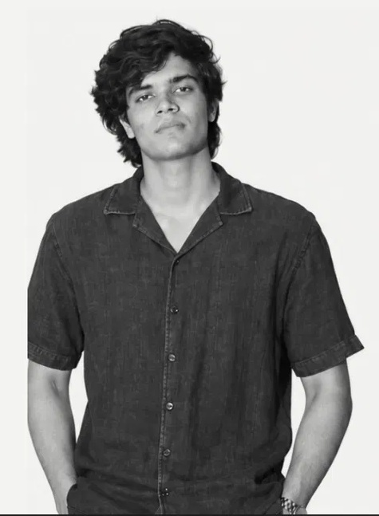

I’m Pavitr Jain, a second-year student at IIT (ISM) Dhanbad. I explore product strategy, user problems, and ideas that make everyday experiences better.
Available for PM internships
“Better products begin with better questions.”
01 / The person behind the questions
Engineering by degree. Product by curiosity.
I’m Pavitr Jain, a second-year Mechanical Engineering student at IIT (ISM) Dhanbad. I’m drawn to the space between what people need and what products actually deliver, whether that’s building credit for students or giving savers a reason to return.
Education
Indian Institute of Technology (ISM), Dhanbad, B.Tech, Mechanical Engineering
My working toolkit
Product strategy / User research / Prioritization / GTM / Competitive analysis
Figma, Excel, SQL, PowerPoint, Canva, MATLAB, Simulink, Statistics, C, SolidWorks, AutoCAD
02 / Learning in the arena
Turning curiosity into practice.
Feb 2026 to present
Product Management Club
Member, IIT (ISM) Dhanbad
Strategy in context. Authored product strategy and go-to-market case studies on UrbanCompany, Meesho, Rapido, and Canva.
Pressure-tested thinking. Competed in 6+ national-level case competitions, including SHARE IITK, CaseVerse 2.0, and Trilytics ’26. Finalist at CaseBlitz and Prodyssey.
Beyond the deck. Sourced sponsorship leads for CaseBlitz, the club’s case competition at Concetto, IIT (ISM) Dhanbad’s annual fest.
Feb 2026 to present
Mechismu Racing Electric
Vehicle Dynamics Engineer, FSAE team
Part of a cross-functional team building an electric formula-style race car, analyzing vehicle dynamics, chassis stability, and performance trade-offs.
03 / Selected product explorations
Problems worth solving.
Competition case studies and PM tasks, not shipped products. A look at the problem, the product decisions, and the metric I chose to care about.
More work
04 / The next chapter
Got a problem worth working on?
I’m looking for a product management internship where I can contribute, ask better questions, and learn from people building real products.